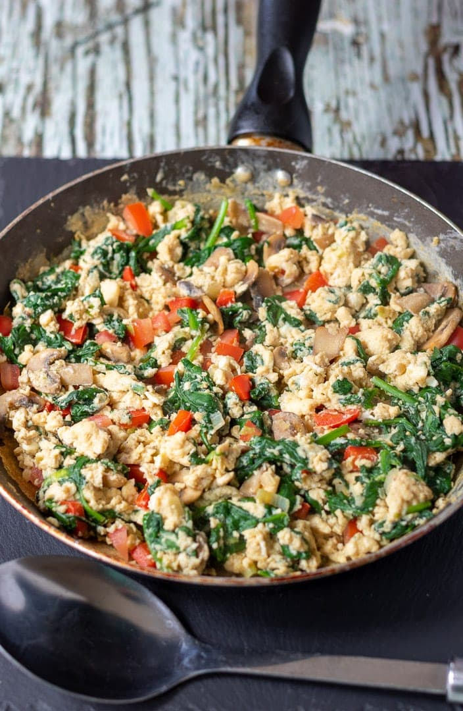

Lasagna Recipe
Description
Soft, creamy eggs mixed with colorful veggies for a healthy, protein-packed breakfast or light lunch.
Ingridients
- 3 eggs
- 1/4 cup milk
- 1/4 onion, chopped
- 1/2 tomato, chopped
- 1/4 bell pepper, chopped
- 1 tablespoon butter
- Salt and pepper to taste
Instructions
- Beat eggs with milk, salt, and pepper.
- Heat butter in a pan over medium heat.
- Add onion, tomato, and bell pepper — cook for 2–3 minutes.
- Pour in the egg mixture.
- Stir gently until the eggs are softly cooked.
- Serve warm with toast.